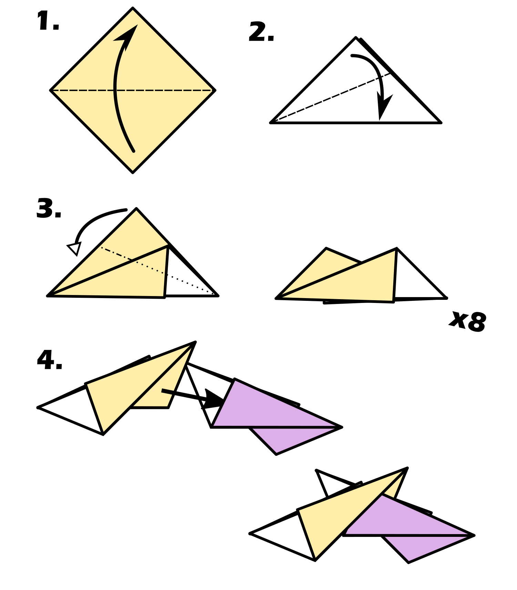

This model 8 modules, each folded from square papers. The finished product will be slightly wider than the side length of the paper. Although the modules themselves are symmetrical, the assembly process is sided, meaning you can, intentionally or unintentionally, end up with different display patterns depending on which hand you hold the piece in when connecting new modules to it. This will not affect the flight of the frisbee.
 home to page 2 ->